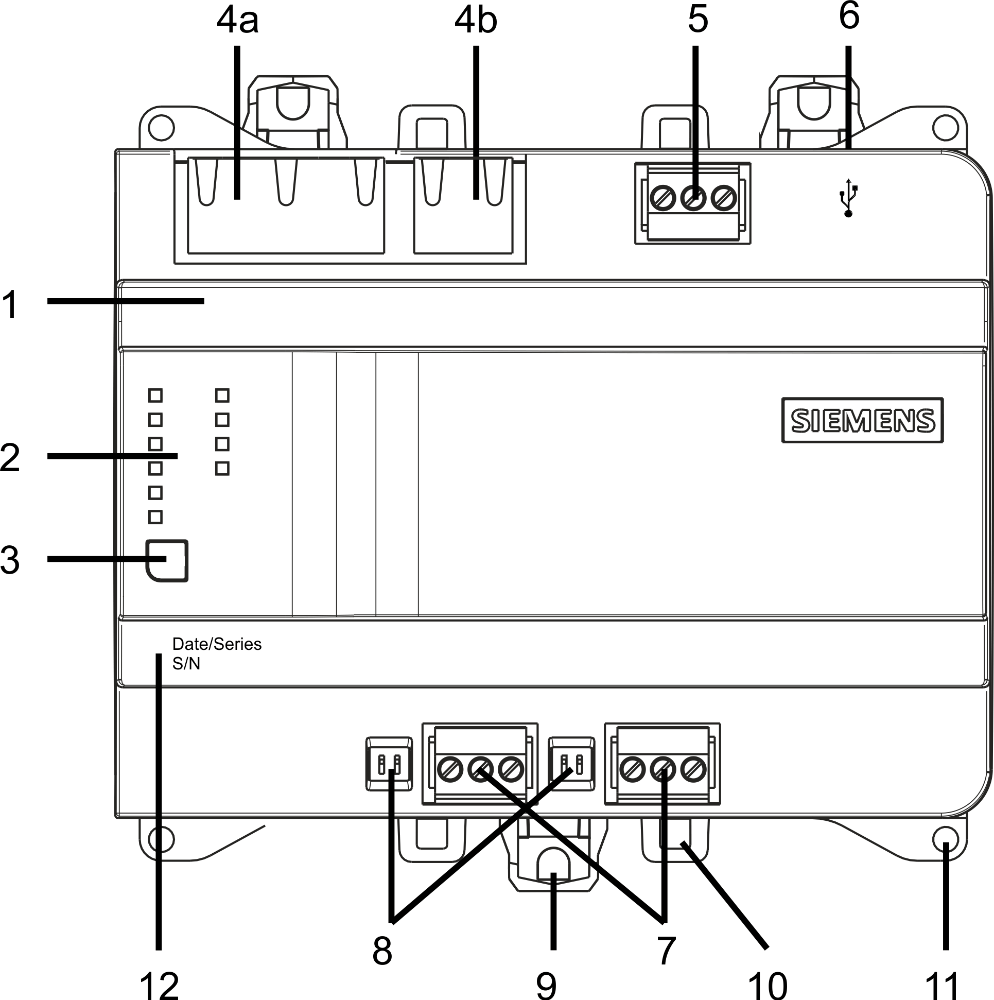
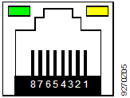
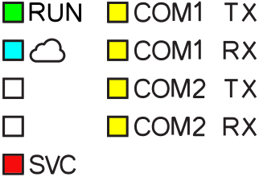

Technical and mechanical design
The device can be mounted on a standard rail or on the wall.
 | 1 | Plastic housing |
2 | LEDs for communication and state | |
3 | Service button | |
4 a) | 2-port Ethernet switch with 2 LEDs per port | |
4 b) | Not supported | |
5 | Plug-in terminal blocks with screw terminals | |
6 | Not supported | |
7 | Not supported | |
8 | Not supported | |
9 | Slider for mounting on standard mounting rails | |
10 | Eyelets for cable ties | |
11 | Holes for wall mounting | |
12 | Date / Series and Serial number |
LED indicators and service pin
Activity | LED / Interface | Color | Activity | Function |
|---|---|---|---|---|
 | Ethernet 1...2 | Green | Continuously ON | Link active |
Yellow | Continuously ON | Link 100 Mbps | ||
 | RUN | Green | Continuously ON | Device operational |
Red | Continuously OFF | OK | ||
Blue | Steady ON | Cloud connection OK | ||
SVC | Red | Continuously OFF | OK | |
Flashing per wink command | Identification of the device after receipt of wink command | |||
| ||||
COM1 / 2 TX | Yellow | Continuously OFF | Function not supported | |
COM1 / 2 RX | Yellow | |||
Service button |
| Short press | Identification on the network | |
As per description: | Do the following to reset the device to factory state:
| |||